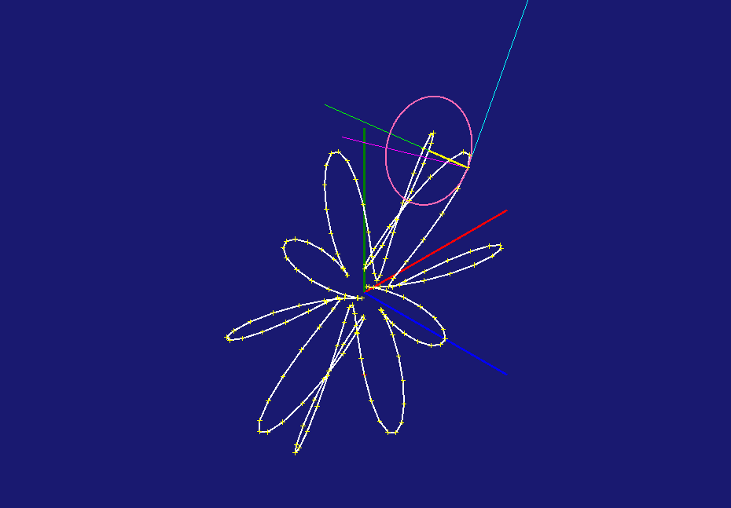
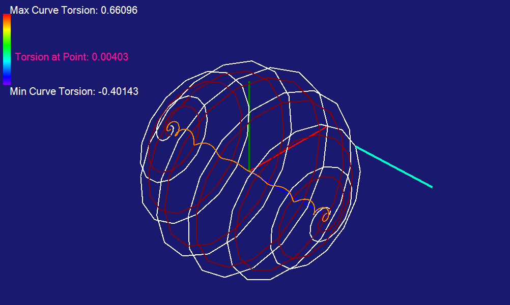
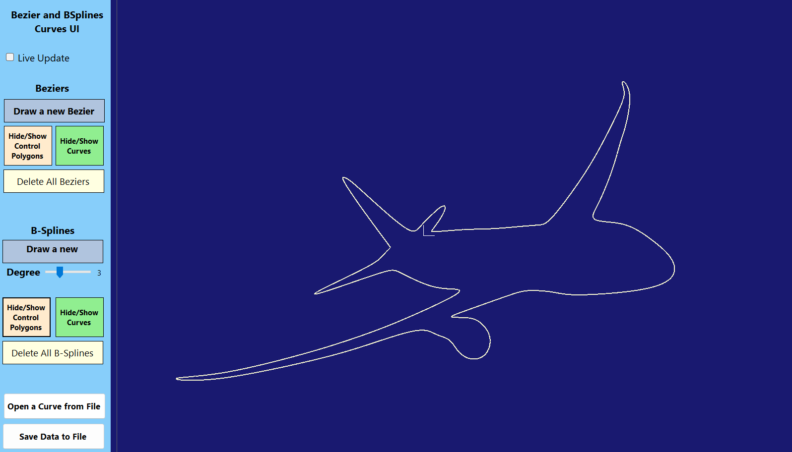

Custom CAD Tools - Curves
Custom-built tools for analysis and construction of parametric curves. Enables high-precision modeling beyond standard CAD abstractions



Project Overview
This project focuses on the mathematical foundations and practical implementation of curve representations, with emphasis on their role in engineering workflows such as CAD and FEM.
Two independent frameworks were developed. The first is an interactive visualization environment designed to explore the differential geometry of curves. It enables real-time manipulation of parametric curves within a defined domain, including transformations (translation, rotation, scaling), animation, and geometric analysis such as curvature, torsion, Frenet frames, osculating circles, offsets, and evolutes.
The second framework is dedicated to constructive curve modeling using Bezier and B-spline formulations. It allows full control over curve definition through direct manipulation of control points, control polygons, weights, and knot vectors. Continuity constraints between curves can be enforced (C0, G1, C1), enabling the construction of smooth, connected geometries.
These tools form a foundation for precise 2D wireframe modeling, where geometric accuracy and mathematical control are critical. Unlike modern CAD environments that prioritize fast solid modeling workflows, this approach preserves full control over curve parameterization and continuity.
This level of control is particularly important in applications such as airfoil design, where small geometric deviations directly affect performance. In such cases, custom-built tools provide capabilities that standard CAD systems often abstract away, enabling exact, problem-specific modeling solutions.
Code Snippet
private void DrawOffset()
{
Graphics g = gpanel.CreateGraphics();
offpen.Width = 2;
offpen.LineJoin = LineJoin.Round;
Vector2[] proj_offset = new Vector2[curve_points];
Vector3[] offset_points_local = (Vector3[])offset_points.Clone();
if (offset_points != null)
{
for (int i = 0; i curve_points; i++) // manipulating the points
{
// Adding scale of the zoom factor
offset_points_local[i] *= viewzoom;
// rotating around Y,X,Z as the track_bars
ApplyRotation2(angX, angY, angZ);
offset_points_local[i] = RotatePoint2(offset_points_local[i]);
//Set Projection -> changing R3 to R2;
proj_offset[i] = new Vector2(offset_points_local[i].X, offset_points_local[i].Y);
//translate to panel origin
proj_offset[i] = Vector2.Transform(proj_offset[i], Matrix3x2.CreateTranslation(new Vector2(trans.X, trans.Y)));
}
for (int i = 0; i curve_points; i++) // drawing the connecting lines
{
if (i == curve_points - 1)
{
if (ClosedLoopFlag)
g.DrawLine(offpen, (PointF)proj_offset[i], (PointF)proj_offset[0]);
else
break;
}
else
g.DrawLine(offpen, (PointF)proj_offset[i], (PointF)proj_offset[i + 1]);
}
}
}